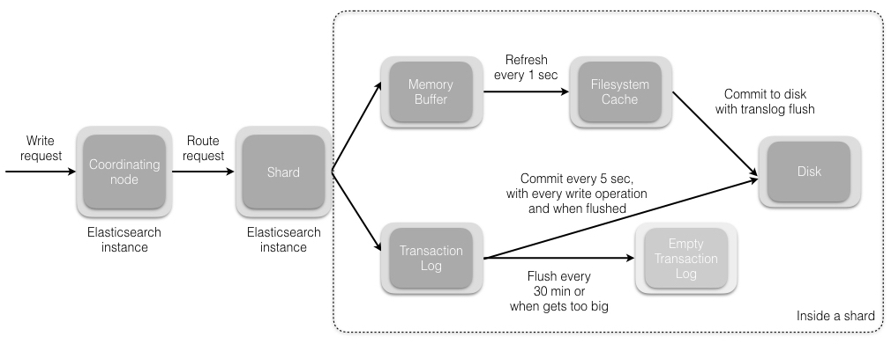
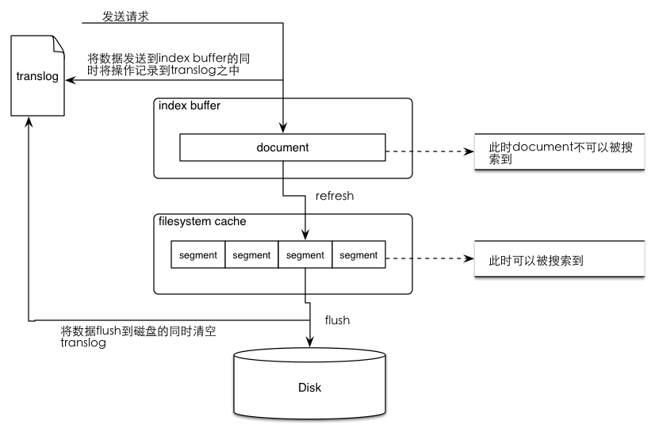

Ch03-Elasticsearch 之 Put
August 7, 2021
Elasticsearch 之 Put，不过与其说是 Elasticsearch 的操作流程，倒不如说是单个 Lucene 索引操作流程。
1. Put 流程 #

当我们发送索引一个新文档的请求到协调节点后，将发生如下一组操作。
- Elasticsearch 集群中的每个节点都包含了该节点上分片的元数据信息。协调节点 (默认) 使用文档 ID 参与计算，以便为路由提供合适的分片。Elasticsearch 使用 MurMurHash3 函数对文档 ID 进行哈希，其结果再对分片数量取模，得到的结果即是索引文档的分片。
shard = hash(document_id) % (num_of_primary_shards)
- 当分片所在的节点接收到来自协调节点的请求后，会将该请求写入 translog，并将文档加入内存缓冲。如果请求在主分片上成功处理，该请求会并行发送到该分片的副本上。当 translog 被同步到全部的主分片及其副本上后，客户端才会收到确认通知。
- Memory buffer 中的内容会被周期性 (默认是 1 秒) 写入到 filesystem cache 上的新 segment 上 (该过程叫做 refresh)。虽然这个 segment 并没有被同步写入磁盘 (fsync)，但它是开放的，内容可以被搜索到。
- 每 30 分钟，或者当 translog 很大的时候，translog 会被清空，文件系统缓存会被同步。这个过程在 Elasticsearch 中称为 flush。在 flush 过程中，内存中的缓冲将被清除，内容被写入一个新 segment。segment 的 fsync 将创建一个新的提交点，并将内容刷新到磁盘。旧的 translog 将被删除并开始一个新的 translog。
注意：
Commit to disk with tranlog flush 应该是 30 分钟 fsync 一次
由于取余这个计算，完全依赖于分母，所以导致 ES 索引有一个限制，索引的主分片数，不可以随意修改。因为一旦主分片数不一样，所以数据的存储位置计算结果都会发生改变，索引数据就完全不可读了。
2. 概念说明 #
| 名词 | 说明 |
|---|---|
| fsync | 涉及到 fsync 操作有两种。内存 buffer 中的内容会被写到 filesystem cache 的 segment 上面，然后这个 segment 会被 fsync 写入到磁盘；translog 会每隔 5 秒或者在一个变更请求完成之后执行一次 fsync 操作，将 translog 从缓存刷入磁盘。 |
| refresh | es 接收数据请求时先存入内存中，默认每隔一秒会从内存 buffer 中将数据写入 filesystem cache，这个过程叫做 refresh |
| flush | es 默认每隔一段时间会将 filesystem cache 中的数据刷入磁盘同时清空 translog 日志文件，这个过程叫做 flush。对于 flush 操作，Elasticsearch 默认设置为：每 30 分钟主动进行一次 flush，或者当 translog 文件大小大于 512MB (老版本是 200MB) 时，主动进行一次 flush。 |
| translog | 保证在 filesystem cache 中的数据不会因为 elasticsearch 重启或是发生意外故障的时候丢失。当系统重启时会从 translog 中恢复之前记录的操作。当对 elasticsearch 进行 CRUD 操作的时候，会先到 translog 之中进行查找，因为 tranlog 之中保存的是最新的数据。translog 的清除时间时进行 flush 操作之后（将数据从 filesystem cache 刷入 disk 之中）。 |
